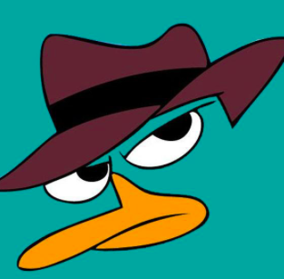

Sâmya Sena, grupo 4
Olá, meu nome é Sâmya Sena, tenho 22 anos e estudo engenharia da informação na UFABC.
Esta é a tarefa referente ao Lab 1, Nós Multimídia, de Codificação de sinais multimímia ministrada pelo Profº Mário Minami.

Perry, o Ornintorrinco é meu avatar
Intuito do laboratório 1
O Laboratório 1 é uma tarefa que tem por intuito exercitar comandos básicos do HTML5 e CSS3 como marcação, negrito e itálico entre outros comandos.
Séries Preferidas
Sherlock
Retrata o famoso detetive Sherlock Holmes vivendo e resolvendo mistérios na Londres do século XXI.House
House é uma série de investigação, em que o vilão é a doença e o herói é um médico polêmico, irreverente e anti-social que não confia em ninguém, muito menos em seus pacientes. Dr. House formou uma excelente equipe de três médicos, escolhendo apenas os melhores para diagnosticar doenças em casos misteriosos e já desacreditados.Dark
Quatro diferentes famílias - Kahnwald, Nielsen, Doppler e Tiedemann - vivem em Winden, uma pequena e aparentemente tranquila cidade alemã. A rotina dos moradores vira de cabeça para baixo quando duas crianças desaparecem misteriosamente, nas proximidades de uma antiga usina nuclear. Possui uma temática interessante de viagem no tempo.Tag object
Exibir documento .pdf, usando object.
Vídeo
Um breve vídeo autoexplicativo
Áudio
Um breve áudio comentando assuntos chave da presente atividade.